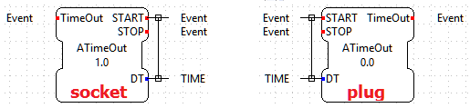
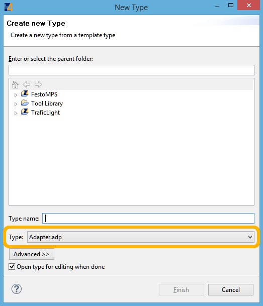
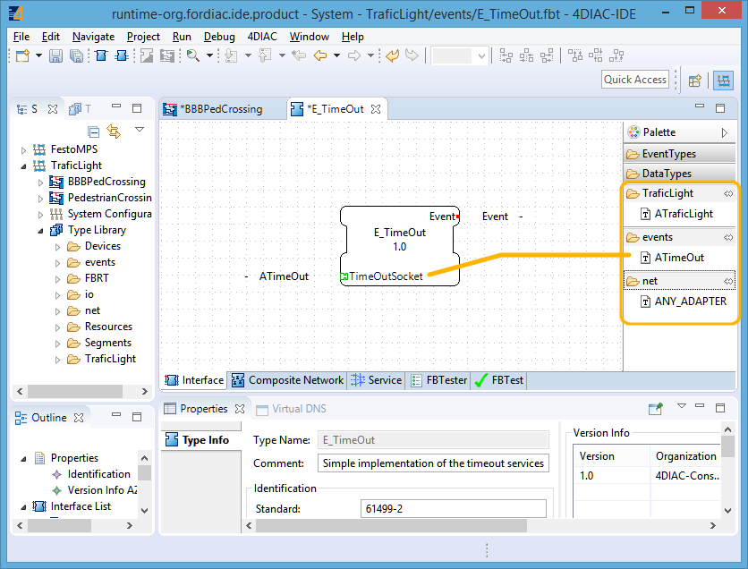
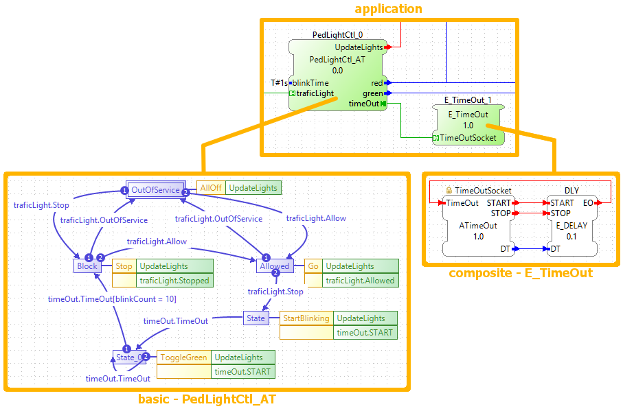

within the function block's interface.
within the function block's interface. within the function block's interface.
within the function block's interface.This page is part of a guide that gives a walk-through over the major 4diac IDE features.
This page shows some advanced features about 4diac IDE that are usually used in more complicated applications:
Adapters group interface elements into reusable interface descriptions. They reduce the number of interface elements (event and data inputs and outputs) and by that the number of connections that have to be created between interacting function blocks. In 4diac IDE, adapters are listed in the type library and represented by this symbol: .
These interface descriptions can be added to the interface of any function block type. Currently, adapters can not contain other adapters. There are two types of adapters, which are mirrored interfaces:
 within the function block's interface. within the function block's interface.When a new adapter is created, it should be a socket. The mirrored plug is derived automatically by 4diac IDE and is NOT created by the user. An adapter (socket) is created by File → New → New Type and selecting as Type. All adapter names should start with an A (naming convention).
After creating your desired adapter type (socket), it can be added to a function block's interface by drag and drop from the Palette, as illustrated in the following figure.
The function blocks used within the following application snippet are part of the TrafficLight example system. Two different adapter types have been used, ATimeOut in PedLightCtl_AT and E_TimeOut) and ATrafficLight in PedLightCtl_AT.
The PedLightCtl_AT is a basic function block. Within basic function blocks adapters are accessed by FB_INTERFACE_NAME.ADAPTER_INTERFACE_NAME. The elements of the ATimeOut adapter are therefore accessed by timeOut.START, timeOut.STOP and timeOut.TimeOut.
The E_TimeOut is a composite function block. Within the network of a composite function block, any adapter added to its interface is represented by an adapter block which looks like a function block. The interface elements of this adapter block are connected like a function block.
Further examples for the usage of adapters can be found within the FestoMPS example system.
If you want to see some examples, behind the following link is an index of the available examples in the documentation:
If you have a specific platform that has input and outputs and is supported by FORTE, for example a Raspberry Pi or a PLC, and you want to use them, go to following page:
Parameters for different platforms
If you want to use a specific communication protocol supported by FORTE, for example MQTT, OPC UA, Modbus and so on, go this page:
If you want to go back to see again the basic features, here's a link:
If you want to go back to the Start Here page, we leave you here a fast access: